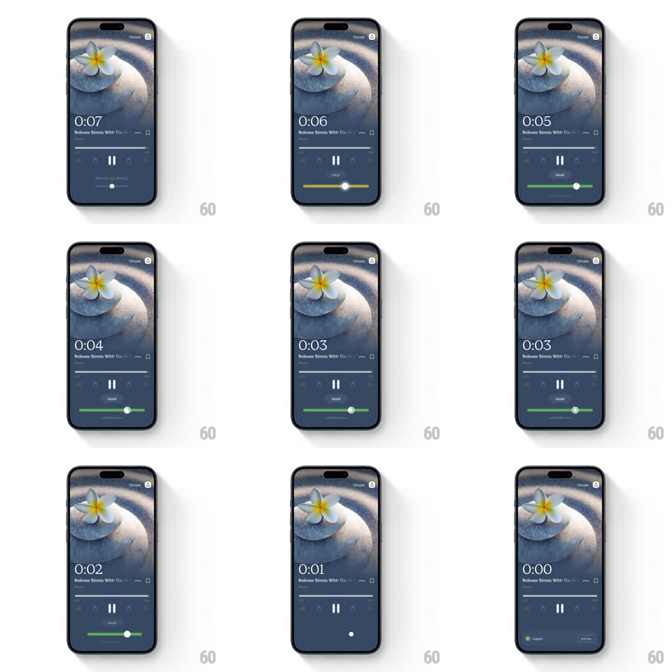

Media
Frame-by-frame

Rebuild this interaction 1:1: Insight Timer's post-session mood slider - under the session player, a "how are you feeling" slider shifts color (amber to green) and label (Okay to Good) as it is dragged, and when the countdown hits 0:00 the player auto-transitions to the session recap screen.

Rebuild this interaction 1:1: Insight Timer's post-session mood slider - under the session player, a "how are you feeling" slider shifts color (amber to green) and label (Okay to Good) as it is dragged, and when the countdown hits 0:00 the player auto-transitions to the session recap screen. ## Integration Integration: stack-agnostic spec - springs given as stiffness/damping, timed motions as duration + curve; map every value to your framework and animation library of choice. ## Scene Session player: artwork header (flower on stone), large countdown timer, session title row, progress bar, pause control. Below: a mood slider - a labeled pill knob on a horizontal track; the track fills from the left as the knob moves. Final beat: the recap screen slides in with feedback chips at 0:00. ## Motion spec Pattern: color-shifting slider + timed auto-advance. - Drag: the knob tracks the finger 1:1; the track fill and knob tint interpolate amber -> light green -> deep green across the range; the mood label above the knob cross-fades between presets (Okay, Good, ...) at zone boundaries (150ms). - Release: the knob settles with a soft spring (~320/20) and the fill glows briefly (300ms). - Auto-advance: when the countdown reaches 0:00, the player dims and the recap screen slides up (400ms, ease-out), carrying the chosen mood into its feedback row. ## Calibration - Color follows position continuously - no discrete jumps between color stops. - The auto-advance fires even if the user never touched the slider; the slider state is optional input. ## Reduced motion Slider snaps between three zones without the color sweep; recap cross-fades (250ms). ## Don't miss - The countdown, progress bar, and mood slider are all live simultaneously - nothing pauses while dragging. - The chosen mood must persist into the recap screen.